01 · Cél és hatókör
Az alkalmazás a meglévő WordPress/WooCommerce weboldalhoz kapcsolódó, mobilra telepíthető PWA. Nem külön webshop és nem külön adminrendszer.
Vásárláskor az összes aktuálisan megvásárolható WooCommerce-terméket listázni kell, továbbá a külön 8 000 Ft/hó Ringató App előfizetést, automatikus megújulással és lemondással. A korábbi Online Ringató kivezetésre kerül. Nincs Kuponjaim funkció, nincs olcsóbb rövid hozzáférés.
A jelenlegi GitHub Pages demó nem végez valós fizetést, foglalást, bérletlevonást vagy üzenetküldést; a terméklista mintakínálat. Az éles rendszerben WordPress/WooCommerce a kizárólagos adatforrás.
02 · Funkciólista
| ID | Funkció | Leírás |
|---|---|---|
| F01 | Belépés, profil | WP felhasználói fiók, saját adatok, jogosultságok. A demóban Anna fiktív fiókja látszik. |
| F02 | Kezdőlap | Ajánlott médiák, közelgő programok, bérlet és előfizetés státusz. |
| F03 | Médiatár | Kategóriák, keresés, ingyenes és előfizetéses hang-/videótartalmak. |
| F04 | Lejátszó | Fekvő és álló videó, lejátszás, kedvenc, sor, teljes képernyő, tájolásváltás. |
| F05 | Kedvencek / sor | Médiatartalmak mentése és lejátszási sorrend; fiókhoz kötött tárolás. |
| F06 | App-előfizetés | Egy csomag: 8 000 Ft/hó, automatikusan megújuló bankkártyás terhelés. |
| F07 | Előfizetés lemondás | Következő levonás kikapcsolható; a már fizetett időszak végéig használható az app. |
| F08 | Termékkatalógus | Összes aktívan megvásárolható WooCommerce-termék listája, webes ár/készlet alapján. |
| F09 | Termékvásárlás | WooCommerce kosár/rendelés, Barion fizetés, megerősítés utáni jogosultság. |
| F10 | Korábbi rendelések | A felhasználó saját vásárlásainak listája, dátum, összeg, rendelés státusza. |
| F11 | Bérletek | Fennmaradó/összes alkalmak, érvényesség, QR és felhasználási események. |
| F12 | Rendszeres program | Nincs létszámlimit, nincs előzetes foglalás; jegy/bérlet lehet szükséges. |
| F13 | Limitált ingyenes program | Előzetes foglalás és lemondás, a kapacitás szerveroldali ellenőrzésével. |
| F14 | Limitált fizetős program | Eseményhez rendelt külön WooCommerce-termék; sikeres fizetés = helyfoglalás. |
| F15 | Beléptetés | Virág/staff QR ellenőrzés, bérletalkalom egyszeri, naplózott levonása. |
| F16 | Üzenetek | Szülő és Virág közti aszinkron szöveges üzenetküldés. |
| F17 | Értesítések | Új média/program és foglalási értesítések, PWA web push engedéllyel. |
| F18 | Kérdések | Rövid szavazások, egyszeri válasz és egyszerű eredmények. |
| F19 | Admin | Meglévő WP/WooCommerce admin; a PWA-ban csak mobilos staff beléptetés. |
| F20 | Megszűnő funkciók | Nincs Kuponjaim, rövid idejű olcsó médiahozzáférés vagy új Online Ringató értékesítés. |
03 · Kezelt entitások és kapcsolatok
| Entitás | Fő tulajdonságok | Kapcsolat |
|---|---|---|
| WP User | id, név, e-mail, jogosultsági szerep | Rendelések, bérletek, foglalások, üzenetek |
| WC Product | id, cím, ár, terméktípus, aktív, megvehető, készlet | Rendeléstétel; opcionálisan esemény/előfizetés |
| WC Order / Item | order_id, tételek, összeg, státusz, user_id, dátum | Fizetési eredményből jegy/bérlet-jogosultság |
| Subscription Plan | product_id, 8000 Ft, 1 hónap, recurring | WC subscription termék |
| Subscription | id, user_id, státusz, következő terhelés, fizetett időszak vége | Előfizetési terv + fizetési események |
| Payment Transaction | provider_id, order_id, összeg, státusz, idempotency_key | Barion ↔ WooCommerce; ellenőrzött webhook |
| Event | id, név, hely, kezdet, típus, kapacitás?, product_id? | Foglalások, eseményjegyek |
| Reservation | id, event_id, user_id, állapot, létszám, order_id? | Limitált program + résztvevő; fizetett rendelés |
| Ticket | id, order_item_id, owner_id, event_id?, QR token, státusz | Vásárolt jegy, esetleg eseményhely |
| Pass | id, owner_id, total, remaining, valid_until | Bérletfelhasználás, rendelési tétel |
| Pass Usage | id, pass_id, staff_id, event_id?, timestamp, unique_key | Beléptetés, duplikált levonás kizárása |
| Media | id, cím, típus, képarány, hossz, kategória, premium, cdn_ref | Kategóriák, kedvencek, lejátszási sor |
| Media Category | id, név, sorrend, aktív | N:M média |
| Favorite / Queue | user_id, media_id, position, created_at | N:M user ↔ média |
| Message | id, thread_id, sender_id, receiver_id, text, read_at | Szülő ↔ Virág beszélgetés |
| Poll / Response | poll_id, kérdés, opciók; response_id, user_id, választás | Szavazásonként egy válasz felhasználónként |
| Push Subscription | id, user_id, endpoint, keys, permission, updated_at | Eszköz / böngésző ↔ felhasználó |
04 · Állapotok
| Terület | Állapotgép |
|---|---|
| Előfizetés | inaktív → fizetés → aktív → lemondott (aktív a periódus végéig) → lejárt |
| Alapfoglalkozás | látható → látogatható; nincs foglalás vagy férőhely |
| Ingyenes limitált | szabad hely → foglalás → megerősítve / lemondva / betelt |
| Fizetős limitált | termék → fizetés függőben → fizetett jegy + foglalás / sikertelen |
| Bérlet | aktív → alkalmak csökkennek → elfogyott vagy lejárt |
| Média | ingyenes / zárolt / betölt / lejátszás / szünet / hiba / teljes képernyő |
| Push | nem engedélyezett / engedélyezve / letiltott |
05 · Üzleti folyamatok és navigáció
App havi előfizetés
Vásárlás → havi 8 000 Ft termék → WooCommerce Subscriptions → Barion recurring engedély → szerveroldali visszaigazolás → teljes médiatár. Lemondás → következő terhelés leáll → hozzáférés időszak végéig.
Rendszeres foglalkozás
Programok → alapfoglalkozás → részletek. Nincs foglalásgomb, nincs létszámlimit. Jegy vagy bérlet vásárolható.
Limitált, ingyenes
Programok → szabad helyek → helyfoglalás → visszaigazolás → Foglalásaim; lemondás felszabadítja a helyet.
Limitált, fizetős
Programok → WooCommerce eseményjegy → Barion fizetés → fizetett rendelés → automatikusan létrejött jegy/foglalás. Sikertelen fizetés nem foglal végleges helyet.
Bérlet és beléptetés
Jegyeim → QR → Virág staff jogosultsággal beolvassa → validáció → egyetlen naplózott alkalomlevonás.
Médiatár
Kezdőlap / Tár → kategória / keresés → tartalom → ingyenes vagy fizetett jogosultság → lejátszás; különben előfizetési ajánlat.
06 · Álló és fekvő videó – kötelező
Vegyes 16:9 fekvő és 9:16 álló videók, amelyek álló és fekvő telefonhelyzetben is torzítás és képkivágás nélkül lejátszhatók. Mind a négy kombinációt külön kell tesztelni. A böngésző tájolásváltásakor a lejátszás folytatódik, a kezelőgombok láthatók maradnak.
| Média × telefon | Követelmény |
|---|---|
| 16:9 videó, álló telefon | A teljes fekvő képkocka látható legyen; levágás/crop nélkül, oldalsó vagy felső üres sáv megengedett. |
| 9:16 videó, álló telefon | Az álló videó maximális méretben, biztonságos vezérlőkkel és feliratokkal látszódjon. |
| 16:9 videó, fekvő telefon | Nagyméretű, lehetőleg fullscreen kép; safe-area és navigáció kontroll. |
| 9:16 videó, fekvő telefon | Teljes álló tartalom középre illesztve, oldalt kitöltő sávok; tilos crop-pal széthúzni. |
| Orientációváltás | Forgatáskor az időpozíció megmarad; responsive layout és fullscreen visszatérés működik. |
| Kompatibilitás | iPhone Safari telepített PWA és Android Chrome PWA, használható MP4/HLS, playsinline, object-fit:contain. |
| Jogosultság és minőség | Védett, rövid életű stream URL, thumbnail, buffer/hiba/újrapróbálás; felirat szükség esetén. |
Műszaki alapelv: eredeti képarány, object-fit: contain, playsinline, megfelelő fullscreen, mobil-kompatibilis streaming, védett média-URL és jól látható vezérlők.
07 · Képernyők – több állapotban
A képernyőképek az aktuális prototípus tényleges böngésző-rendereléséből készülnek. A funkciók demóadatokon működnek.

KÉPERNYŐ 01
Főoldal / ingyenes hozzáférés
Ajánlott dalok, soron következő programok, bérlet és előfizetés jelzése.
Prototípus állapot: home

KÉPERNYŐ 02
Médiatár / zárolt elemek
Keresés, kategóriák és prémium lakat; ingyenes tartalom közvetlenül indul.
Prototípus állapot: library
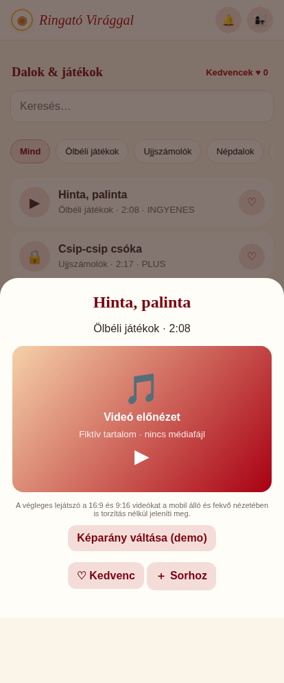
KÉPERNYŐ 03
Fekvő videó lejátszó
16:9 képarány; teljes képkocka, vezérlők és kedvencek.
Prototípus állapot: openContent("hinta")
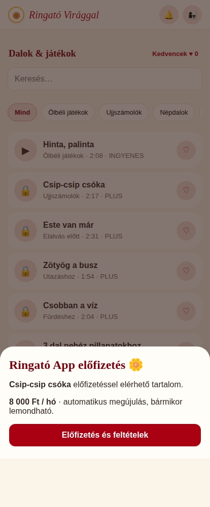
KÉPERNYŐ 04
Zárolt tartalom / előfizetési ajánlat
Havi 8 000 Ft-os csomag; nincs olcsó rövid hozzáférés.
Prototípus állapot: openContent("csip")
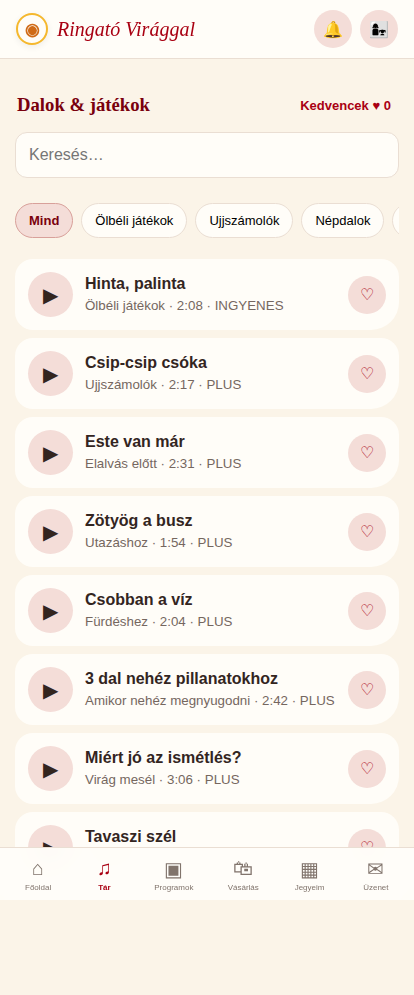
KÉPERNYŐ 05
Médiatár / aktív előfizetés
A prémium tartalom a jogosultság megszerzése után elérhető.
Prototípus állapot: ACTIVE
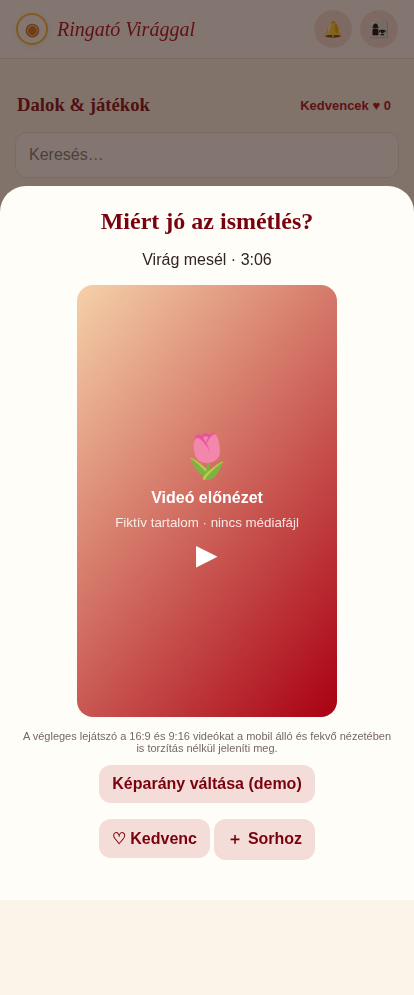
KÉPERNYŐ 06
Álló videó lejátszó
9:16 képarány; álló és fekvő telefonon is teljes tartalom.
Prototípus állapot: ACTIVE;openContent("mesel")
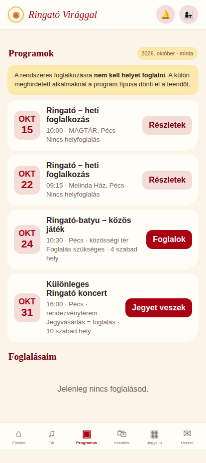
KÉPERNYŐ 07
Programlista / három típus
Rendszeres, ingyenes foglalós és fizetős foglalós program.
Prototípus állapot: calendar
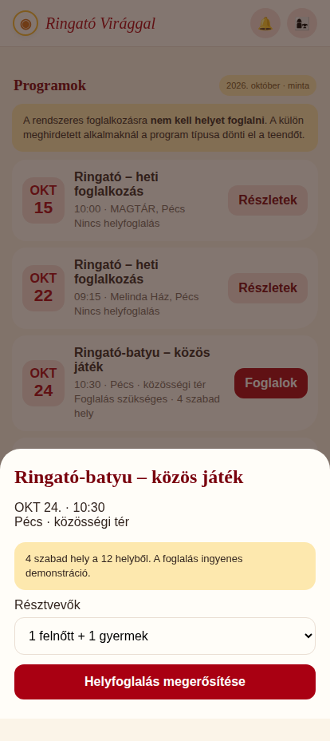
KÉPERNYŐ 08
Ingyenes programfoglalás
A férőhely-limit miatt foglalás szükséges.
Prototípus állapot: eventDetails("limited")
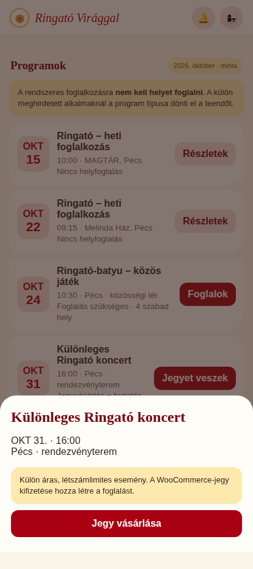
KÉPERNYŐ 09
Fizetős esemény / jegy
Sikeres jegyvásárlás egyben foglalás.
Prototípus állapot: eventDetails("concert")
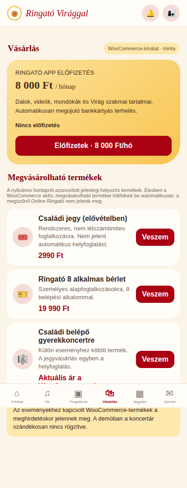
KÉPERNYŐ 10
Vásárlás / induló állapot
Aktív termékek, új app havi előfizetés; korábbi Online Ringató nincs kínálva.
Prototípus állapot: store
KÉPERNYŐ 11
Havi előfizetés / aktív
Automatikusan megújuló havi tagság, 8 000 Ft.
Prototípus állapot: ACTIVE
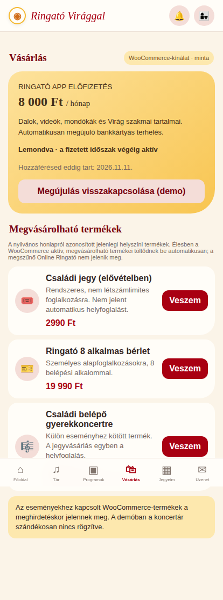
KÉPERNYŐ 12
Havi előfizetés / lemondva
A következő terhelés leáll, a fizetett időszak végéig hozzáfér.
Prototípus állapot: ACTIVE;ENDING
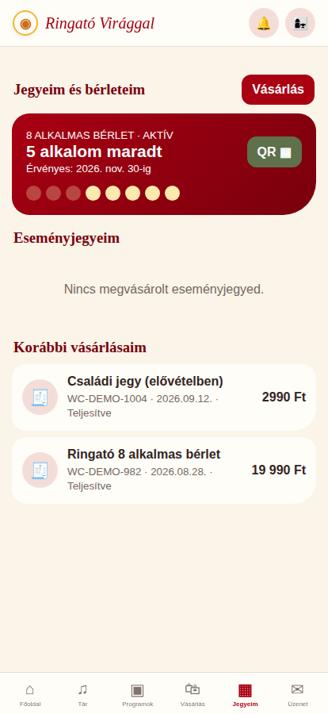
KÉPERNYŐ 13
Jegyek, bérlet, korábbi rendelések
8 alkalmas bérlet maradéka, vásárolt jegyek, rendelési előzmények.
Prototípus állapot: passes
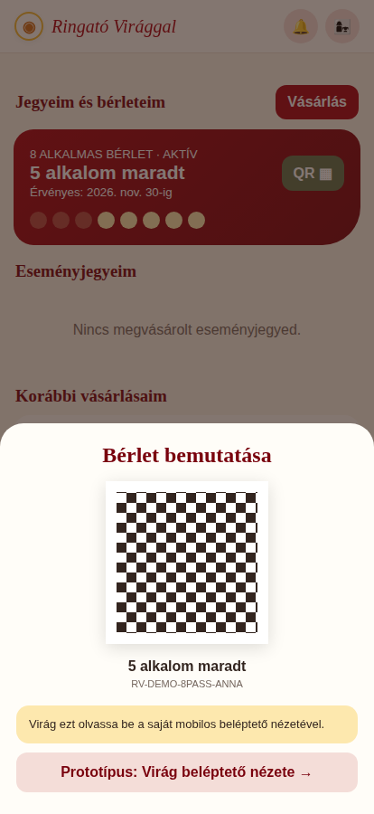
KÉPERNYŐ 14
Bérlet / QR-bemutatás
Bemutatáskor nincs levonás; csak a sikeres helyszíni ellenőrzés számít.
Prototípus állapot: showQR()
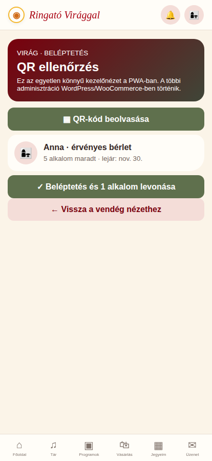
KÉPERNYŐ 15
Virág / beléptetés
Staff QR ellenőrzés; alkalomlevonás csak sikeres beváltáskor.
Prototípus állapot: scan()
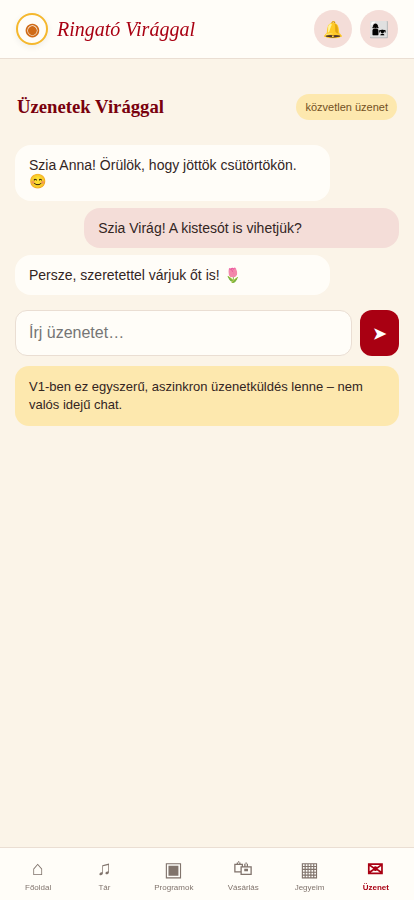
KÉPERNYŐ 16
Üzenetek
Szülő és Virág aszinkron üzenetei.
Prototípus állapot: messages
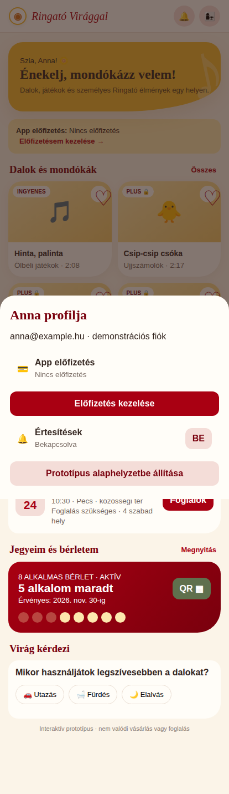
KÉPERNYŐ 17
Profil / állapotok
Előfizetés kezelése, értesítések és demo reset.
Prototípus állapot: showProfile()
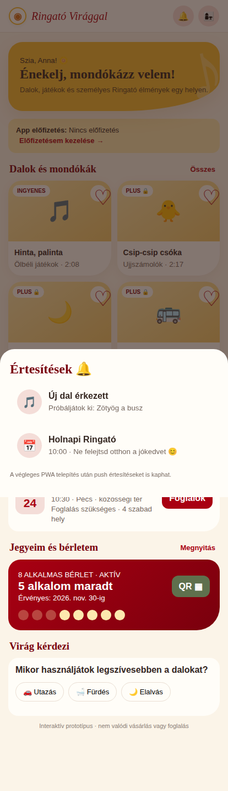
KÉPERNYŐ 18
Értesítések
Új tartalom- és programértesítések.
Prototípus állapot: showNotifications()
08 · Architekturális és nem-funkcionális követelmények
Integráció
WordPress-fiók és admin; WooCommerce-terméktörzs, rendelés, előfizetés és fizetés; Barion recurring engedélyezett integrációval. Ringató WP plugin REST API: program, foglalás, bérlet, jegy, jogosultság, média, üzenet, push. PWA ajánlottan ugyanazon domain /app útvonalán. Média biztonságos CDN-ről.
Tranzakciók és jogok
Webhook idempotencia, sikertelen fizetés esetén nem készül végleges foglalás. Kapacitást szerveroldali zárolás védi. QR-ben nincs személyes adat; staff jogosultság és auditnapló. Az előfizetés lejáratát szerver ellenőrzi.
Minőség és biztonság
HTTPS, auth + capability check, CSRF, GDPR adatminimalizálás, tartalomvédelem, mentések, staging környezet, regressziós WooCommerce/Barion tesztek. iOS/Android PWA, négy videóorientáció, fizetési hiba, kapcsolatszakadás és több eszköz tesztelendő.
09 · Nyitott döntések
| Téma | Egyeztetés |
|---|---|
| WooCommerce katalogizálás | Az összes aktuális termék és kategória listája, archivált termékek szűrése. |
| Előfizetés | Név, havi számlázási nap, ÁSZF, fogyasztói tájékoztatás, számlázási folyamat. |
| Barion | Recurring/token engedély, WooCommerce Subscriptions kompatibilis bővítmény. |
| Online Ringató kivezetése | Meglévő vásárlók jogosultságai, archiválás, átmenet. |
| Foglalási szabályok | Család vagy személy számít kapacitásnak? Várólista és lemondási határidő? |
| Fizetős események | Átmeneti készletfoglalás, visszatérítés, lemondás. |
| Bérletek | Érvényesség, használat többször egy napon, átruházás, foglalkozás-típus jogosultság. |
| Média | CDN, videóminőség, képformátum, feliratozás, tartalomhozzáférés. |
| Adatkezelés | Értesítések, személyes üzenetek, hozzájárulások, megőrzés. |